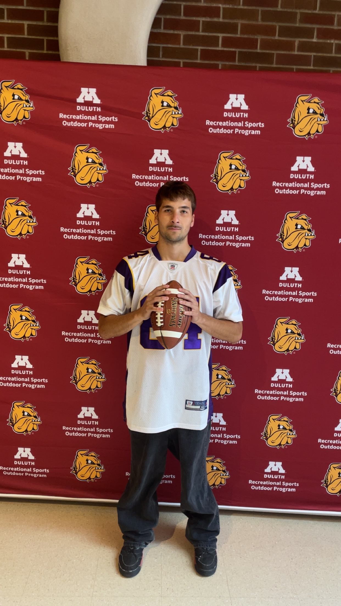
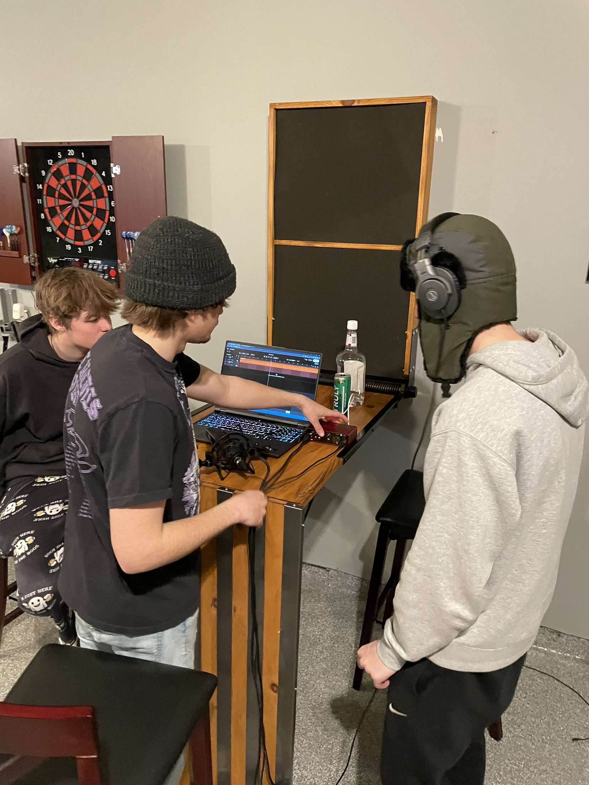

Sports
Sports play a major role in my life, whether I’m watching games or playing with friends. My favorite professional teams are the Minnesota Vikings, Minnesota Timberwolves, and the Florida Gators. I especially enjoy playing hockey and basketball, which allow me to stay active, compete, and stay connected with friends. Sports are important to me because they keep me healthy, give me a way to challenge myself, and help me build strong friendships.
Movies
I really enjoy watching movies, both with my roommates and on my own. I’m especially drawn to science fiction and horror films. My two favorite directors are Quentin Tarantino and Christopher Nolan, and some of my favorite movies include Inglourious Basterds, The Dark Knight, and Once Upon a Time in Hollywood. Movies are important to me because they help me relax, inspire my creativity, and let me escape into different worlds.

Music
Music is a major part of my everyday life. Whether I’m listening to it or creating it, music keeps me inspired and motivated. Lately, I’ve been listening to a lot of rock, but I also enjoy rap. Some of my favorite bands include Alice in Chains, System of a Down, and Stone Temple Pilots. My favorite rap artists include Kanye West, Freddie Gibbs, and Danny Brown. Music is important to me because it fuels my emotions, helps me express myself, and keeps me connected to the things I care about.

.JPG)